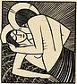

|
|
|
Song of Solomon 2
|
|
| 2:1
I am the rose of Sharon, and the lily of the valleys. |
|
| 2:2
As the lily among thorns, so is my love among the daughters. |
 (2:3-17) (2:3-17)
(2:3) "I sat down under his shadow with great delight, and his fruit was
sweet to my taste."
What the Bible says about Oral Sex
Stay with me apples
(Eric Gill,
1925)
|
| 2:3
As the apple tree among the trees of the wood, so is my beloved among the
sons. I sat down under his shadow with great delight, and his fruit was
sweet to my taste.
|
| 2:4
He brought me to the banqueting house, and his banner over me was love.
|
| 2:5
Stay me with flagons, comfort me with apples: for I am sick of love.
|
| 2:6
His left hand is under my head, and his right hand doth embrace me.
|
| 2:7
I charge you, O ye daughters of Jerusalem, by the roes, and by the hinds
of the field, that ye stir not up, nor awake my love, till he
please. |
(2:6-7) "His left hand is under my head and his
right hand doth embrace me ... stir not up, nor awake my love, till he please."
|
| 2:8
The voice of my beloved! behold, he cometh leaping upon the mountains,
skipping upon the hills.
|
| 2:9
My beloved is like a roe or a young hart: behold, he standeth behind our
wall, he looketh forth at the windows, shewing himself through the lattice. |
(2:9) "My beloved is like a roe or a young hart: behold, he standeth behind our
wall, he looketh forth at the windows, shewing himself through the lattice."
|
| 2:10
My beloved spake, and said unto me, Rise up, my love, my fair one, and
come away.
|
| 2:11
For, lo, the winter is past, the rain is over and gone; |
|
| 2:12
The flowers appear on the earth; the time of the singing of birds is come,
and the voice of the turtle is heard in our land; |
|
| 2:13
The fig tree putteth forth her green figs, and the vines with the tender
grape give a good smell. Arise, my love, my fair one, and come away. |
|
| 2:14
O my dove, that art in the clefts of the rock, in the secret places of the
stairs, let me see thy countenance, let me hear thy voice; for sweet is thy
voice, and thy countenance is comely. |
(2:14) "In the secret places of the stairs, let me see thy countenance ... for ... thy countenance is comely."
|
| 2:15
Take us the foxes, the little foxes, that spoil the vines: for our vines
have tender grapes. |
(2:16) "My beloved is mine, and I am his: he feedeth among the lilies."
What the Bible says about Oral Sex
(2:17) "Until the day break, and the shadows flee away, turn, my beloved, and be
thou like a roe or a young hart upon the mountains."
|
| 2:16
My beloved is mine, and I am his: he feedeth among the lilies.
|
| 2:17
Until the day break, and the shadows flee away, turn, my beloved, and be
thou like a roe or a young hart upon the mountains of Bether.
|
|